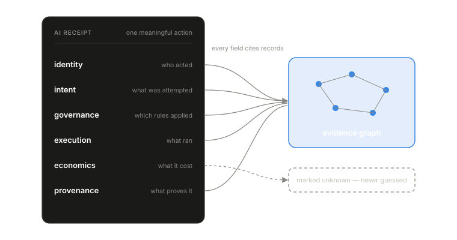

Ordinary business systems settled this problem long ago. A payment receipt records payer, payee, amount, time, and an authorization reference. A shipping receipt records sender, carrier, route, and delivery evidence. These records are far smaller than the events they represent, yet they carry enough structure to support dispute, reconciliation, and audit.
AI runtime systems have no equivalent record. The absence shows whenever a team asks a simple operational question and receives a pile of partial signals. Who caused this model call? Was the selected model allowed under policy? Did a provider timeout cause the retry? Which dollars belong to the retry chain? Which of these answers is observed fact, and which is somebody’s reconstruction?
An AI receipt is the compact evidence record emitted for a meaningful AI runtime action. It states who acted, what they were trying to do, what rules applied, what executed, what it cost, and what evidence supports each of those claims. Six domains, one record family:
- identity: who acted, on behalf of whom
- intent: what was attempted
- governance: which rules applied
- execution: what actually ran
- economics: what it cost
- provenance: what proves the claims above

Two properties make it trustworthy. It is body-free by default: hashes, identifiers, versions, and bounded classifications rather than prompts and payloads, so it can be emitted consistently without becoming a data liability. And every field either cites evidence or is marked unknown — a receipt is a projection of the evidence graph from Paper 3, never an independent record that can drift from the facts underneath it.
The receipt is deliberately narrow. It summarizes one meaningful action and points to richer evidence where retention policy permits. It is a unit of accountability, and units of accountability earn trust by staying small, consistent, and checkable.
Receipts change the operational conversation. Without them, the question after an incident is “can we reconstruct what happened?”, and answering it means days of archaeology across logs, dashboards, and provider consoles. With them, the first question becomes “which receipt fields are complete, and which evidence gaps limit the claim?” That is a question a team can answer in minutes, and it is honest about its own limits.
The organization is accountable for an AI action even when the model’s internal reasoning is unavailable. The receipt records the runtime facts around the action: budget consumed, route selected, tools invoked, data touched, authority exercised. That is what accountability can actually stand on.
The full paper
Paper 4 develops the receipt as a systems abstraction: what belongs in each domain and what does not, when a receipt should be emitted and at what granularity, how receipts stay verifiable against the evidence behind them, a worked reference scenario, and failure modes, including what happens when receipts grow into general-purpose data dumps. The full paper is available to teams we work with — what we publish and what we gate.
Next: Paper 5 — Behavioral Governance, which uses this evidence before execution instead of after.